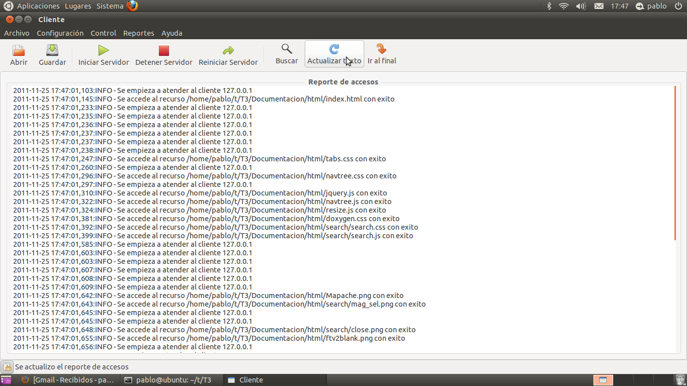
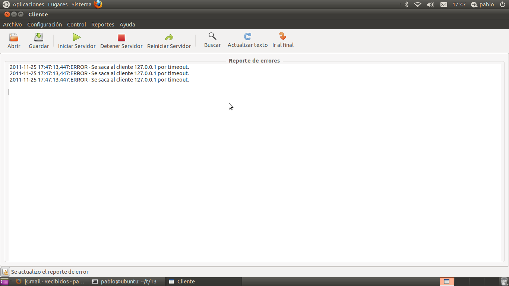

Administrando el servidor
Para verificar el desempeño de nuestro servidor es muy útil ver como han sido los accesos y que errores han ocurrido durante la vida del mismo
4.1. Observando los LOG de accesos al servidor
Para observar los accesos se puede acceder a la vista de accesos utilizando el menú y seleccionando la opción Accesos de Reportes. Los reportes nos dan la opción de verificar que accesos hubo dentro del servidor

4.2. Observando los LOG de errores del servidor
Para observar los errores se puede acceder a la vista de accesos utilizando el menú y seleccionando la opción Accesos de Reportes. Los reportes nos dan la opción de verificar que errores hubo dentro del servidor

4.3. Opciones avanzadas
Además, ambos reportes nos brindan la opción de actualizarlos, buscar entradas con algún texto particular y marcar todos los que contengan alguna cadena de texto.
Por ejemplo, es posible marcar todas las entradas de log para una ip dada o todos lo errores que se hayan generado para la misma. Es útil para encontrar posibles ataques al servidor.
Estas opciones se encuentran en la parte superior de la vista de reportes.